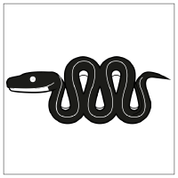

Welcome!#
Most of us study and work at the Bio-image Analysis Technology Development group at the DFG Cluster of Excellence “Physics of Life” at the TU Dresden. We blog about image data science, knowledge exchange and research data management in the life sciences. The contents of this blog are licensed by the respective authors under CC-BY 4.0 license unless a different license is specified.
If you want to read more about why we blog, please check out this blog post.
If you have feedback or suggestions, if spotted a typo, broken link or misleading explanation, please get in touch via a github issue or pull request so that we can fix it. Contributions are very welcome.
Recent blog posts#
Getting started with Mambaforge and Python#
Mara Lampert, January 26th, 2023

{kind=link}
This post will help you to get started with Python using Mambaforge. More precisely, you will learn how to install Mambaforge, how to create and use conda environments and know about some very important packages.
Using GPU-accelerated image processing on the TUD HPC cluster#
Till Korten, Oct 21st, 2022

The High Performance Computing cluster at the compute center (ZIH) of the TU Dresden provides a lot of computational resources including GPU support, which we can use for analyzing data in the life-sciences.
Setting up GPU-accelerated image processing on the TUD HPC cluster#
Till Korten, July 29th, 2022

The High Performance Computing cluster at the compute center (ZIH) of the TU Dresden provides a lot of computational resources including GPU support, which we can use for analyzing data in the life-sciences.
Running Deep-learning Scripts in the BiA-PoL Omero Server#
Marcelo Zoccoler, May 2nd, 2022

This blog post explains how to run omero scripts in the BiA-PoL omero server. In this example, we execute a script on the server that runs a 2D Stardist model on a sample image.
Mini-Sabbatical Experience at Bia-PoL#
Friederike Kessel, February 28th, 2022

This is a blog post about the personal experience of Rike, a post-doc who had just finished her PhD at the University Clinic in Dresden. She spent a two weeks training period at BiA-PoL working with image analysis.
Getting started with Python and Anaconda#
Johannes Müller, January 26th, 2022
{kind=link}
This post will help you to get started with using Python. More specifically, it will help you set up Anaconda environments which can be used to control installed packages effectively.
GUIs: Creating graphical user interfaces with/for Python, Part IV#
Marcelo Zoccoler, Johannes Müller, December 15th, 2021

Last part of this series, this post will teach you how to turn your napari GUI/widget into a napari plugin and publish it on Pypi, so everyone can access it, install it and benefit from your contribution.
Find more blog posts on the left sidebar. Enjoy reading!
Acknowledgements#
We acknowledge the support by the Deutsche Forschungsgemeinschaft (DFG, German Research Foundation) under Germany’s Excellence Strategy – EXC2068 - Cluster of Excellence Physics of Life of TU Dresden.